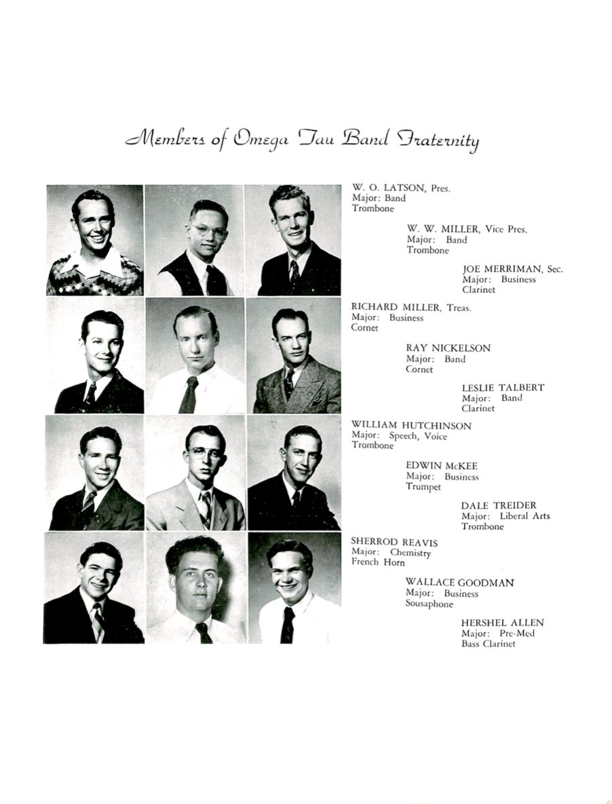
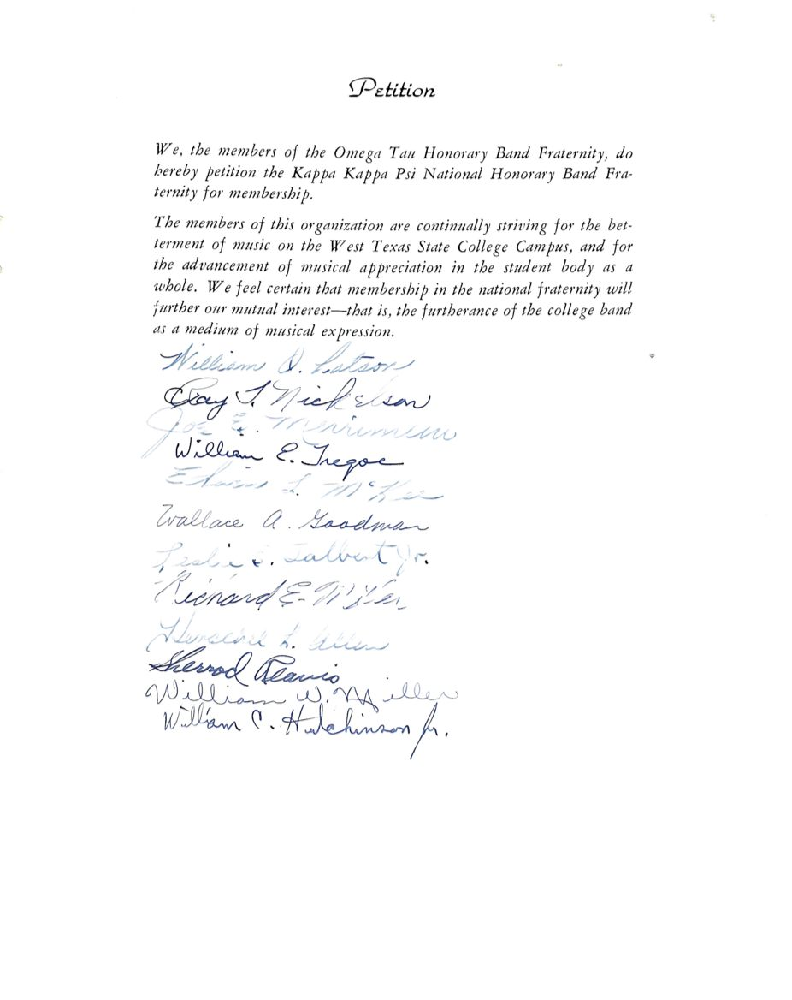
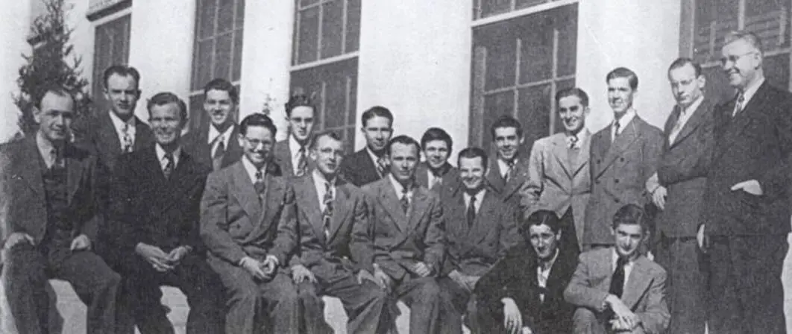
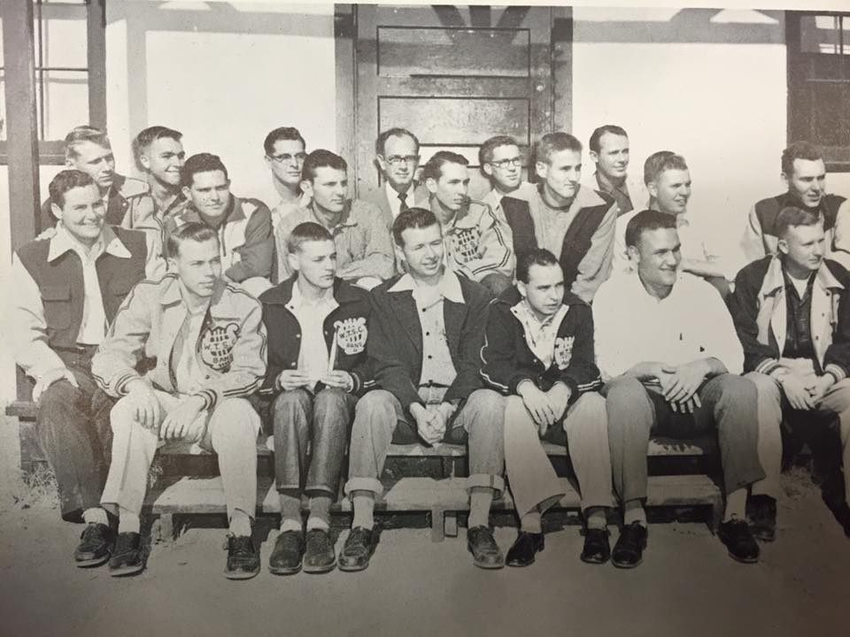

Chapter No. 47 · Est. 1947
Alpha Psi History
From the Omega Tau Honorary Band Fraternity to the Alpha Psi Chapter of Kappa Kappa Psi: a tradition rooted in music, service, leadership, and brotherhood.
Omega Tau
Where it began
The Alpha Psi Chapter of Kappa Kappa Psi was founded by members of the Omega Tau Honorary Band Fraternity at West Texas State Teachers College. In their petition for membership into Kappa Kappa Psi, the members of Omega Tau expressed their commitment to strengthening music and musical appreciation on campus. They believed that becoming part of the national fraternity would further their dedication to the college band as a medium of musical expression.
At the time of the petition, W. O. Latson, a Band major and trombone player, served as President of Omega Tau. The founding leadership also included W. W. Miller, Vice President; Joe Merriman, Secretary; and Richard Miller, Treasurer. The remaining founding brothers were Ray Nickelson, Leslie Talbert, William Hutchinson, Edwin McKee, Dale Treider, Sherrod Reavis, Wallace Goodman, and Hershel Allen.
The petition received strong support from the leadership of West Texas State Teachers College, including President J. A. Hill, Dean D. A. Sirley, Wallace R. Clark, Head of the Department of Music, and M. J. Newman, Director of Bands.
Professor Newman spoke highly of the organization and its members, stating:
Since their organization, Omega Tau has given our band considerable assistance and support. Individually, they represent the finest element in the band, and collectively, they have proven themselves invaluable.
M. J. Newman, Director of Bands


October 25, 1947
Chapter No. 47 is installed
On October 25, 1947, the Alpha Psi Chapter, Chapter No. 47, was officially installed at West Texas State Teachers College. Grand Secretary/Treasurer Charles A. Wiley and Grand President Max Mitchell served as the installing officers, while the Alpha Omicron Chapter conducted the Ritual and Installation ceremony.

Charter Members
The first brothers of Alpha Psi
- William Latson
- William Miller
- Joe Merriman
- Richard Miller
- Leslie Talbert, Jr.
- Ray Nickelson
- William Hutchinson, Jr.
- William Tregoe
- Edwin McKee
- Ira Reavis
- Herschel Allen
- Wallace Goodman
- M. J. Newman
A Living Legacy
Carrying the tradition forward
From its beginnings as the Omega Tau Honorary Band Fraternity to its establishment as Alpha Psi Chapter of Kappa Kappa Psi, the chapter has carried forward a tradition rooted in music, service, leadership, and brotherhood. The dedication of its founding members established a legacy that continues to shape Alpha Psi today.

- Omega Tau
Band members at West Texas State Teachers College organize the Omega Tau Honorary Band Fraternity.
- The Petition
Omega Tau petitions Kappa Kappa Psi for membership, with the backing of the college president, the music department, and Director of Bands M. J. Newman.
- October 25, 1947
Alpha Psi is installed as Chapter No. 47 of Kappa Kappa Psi.
- October 13, 1979
The chapter dedicates a memorial to Rick “Big W” Wilborn outside Mary Moody Northen Hall.
- 2019
Alpha Psi receives the F. Lee Bowling Participation Award at the National Convention. See Honors & Legacy.
- June 5, 2025
The Alpha Psi Alumni Association is founded to give every generation of the herd a home.
Part of this story?
Every class since 1947 has added a chapter. Reconnect with the brotherhood through the Alpha Psi Alumni Association.